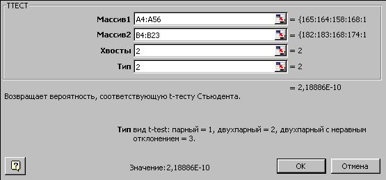
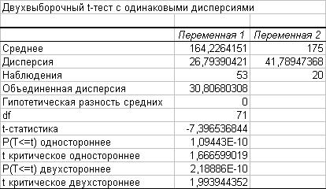

1. Формулируем нулевую гипотезу
Выборочные средние равны; их видимое различие объясняется влиянием случайных факторов.
2. Выбираем уровень значимости
В данном случае вполне достаточен уровень значимости
=0,05.
Проверка гипотеры о равенстве выборочных средних
Проверка гипотезы о равенстве средних проходит, как обычно, в несколько этапов.
1. Формулируем нулевую гипотезу
Выборочные средние равны; их видимое различие объясняется влиянием случайных факторов.
2. Выбираем уровень значимости
В данном случае вполне достаточен уровень значимости
3. Выбираем критерий
Нулевую гипотезу будем проверять по критерию Стъюдента. Выберем один из трех вариантов t-критерия Стъюдента:
- парный тест (для зависимых выборок);
- двухвыборочный тест для выборок с равными дисперсиями (гомоскедастический);
- двухвыборочный тест для выборок с различными дисперсиями (гетероскедастический);
Поскольку выборки независимы, парный тест неприменим. Для определения нужного варианта двухвыборочного теста нужно знать, одинаковы или различны дисперсии наших выборок. Поэтому сначала нужно проверить гипотезу о равенстве выборочных дисперсий. Вывод: в данном случае дисперсии выборок считаем одинаковыми. Мы должны использовать двухвыборочный t-тест для выборок с равными дисперсиями.
4. Определяем критическую область
Для определения критической области сначала следует выбрать альтернативную гипотезу. Сформулируем ее следующим образом: выборочные средние различны (не равны). При такой альтернативной гипотезе критическая область - двусторонняя.
5. Вычисляем эмпирическое значение t-критерия Стъюдента или его Р-значение
Используем функцию =ТТЕСТ(), возвращающую Р-значение критерия Стъюдента:
- Используя Мастер функций, выберите функцию ТТЕСТ из раздела "Статистические".
- Заполните поля аргументов:
в аргумент Массив1 введите адрес области с данными первой выборки;
в аргумент Массив2 введите адрес области с данными второй выборки;
в аргумент Хвосты введите 1 для односторонней критической области или 2 - для двусторонней;
аргумент Тип может принимать три значения: 1 - для парного теста (зависимые выборки), 2 - для двухвыборочного теста с равными дисперсиями, 3 - для двухвыборочного теста с неравными дисперсиями:

- Нажмите кнопку ОК.В ячейке окажется значение 2,1888587E-10.
6. Интерпретация результатов
Функция =ТТЕСТ() вернула значение Р=2,1888587E-10. Этот результат означает, что нулевую гипотезу о равенстве выборочных средних можно принять на уровне значимости 2,1888587E-10 и более высоких уровнях, т.е. при
меньше 2,1888587E-10.
Т.к. выбранное нами значение
7. Вывод
На выбранном нами уровне значимости 0,05 отвергаем нулевую гипотезу. Выборочные средние следует считать различными.
ЗАМЕЧАНИЕ
Зачастую для проверки гипотез о равенстве средних бывает удобнее использовать надстройку “Анализ данных”. При этом изменяются только 5-й и 6-й пункты в процедуре проверки гипотез. Покажем, как это делается.
5. Вычисляем эмпирическое значение t-критерия Стъюдента или его Р-значение
В надстройке “Анализ данных”выберите инструмент “Двухвыборочный t-тест с одинаковыми дисперсиями”. Заполните поля, как это указано ниже:
В поле Альфа введите выбранный уровень значимости (в данном случае 0,05). Щелкните на кнопке ОК. На экране, начиная с указанного Вами адреса (параметр "Выходной интервал"), будет выведена следующая таблица:

6. Интерпретация результатов
Модуль эмпирического значения t-статистики (строка "t-статистика на рисунке) равен 7,396536844. Это значение нужно сравнить с критическим tcr (строка "t критическое двустороннее" на рисунке), которое равно 1,993944352. Если t больше, чем tcr, то нулевая гипотеза отвергается, если меньше - принимается.
В данном случе эмпирическое значение критерия Стъюдента больше критического, поэтому нулевая гипотеза отвергается. Обратите внимание на Р-значение (строка "P(T<=t) двухстороннее").